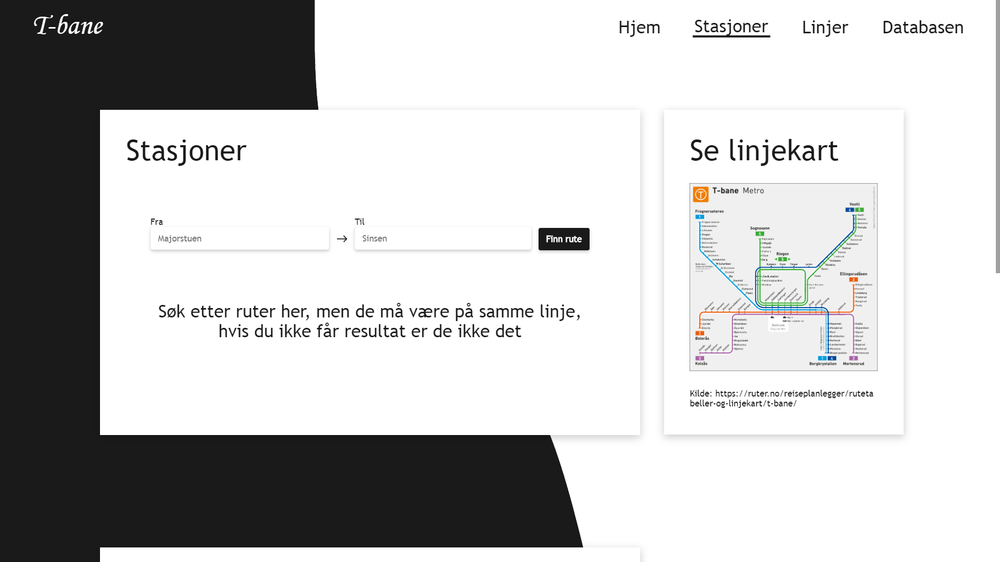
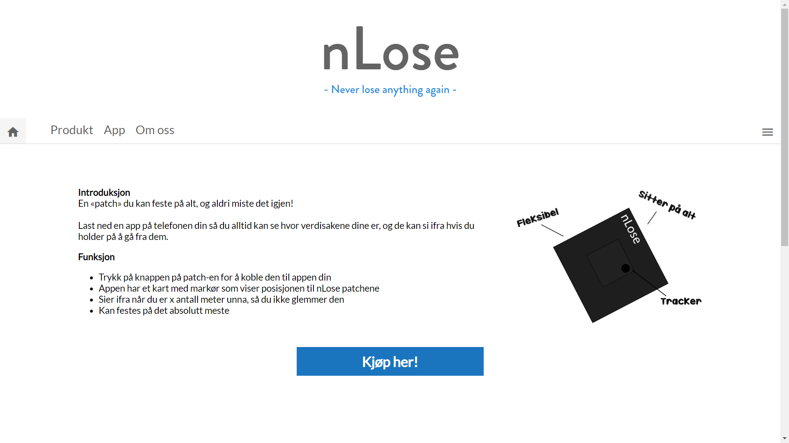
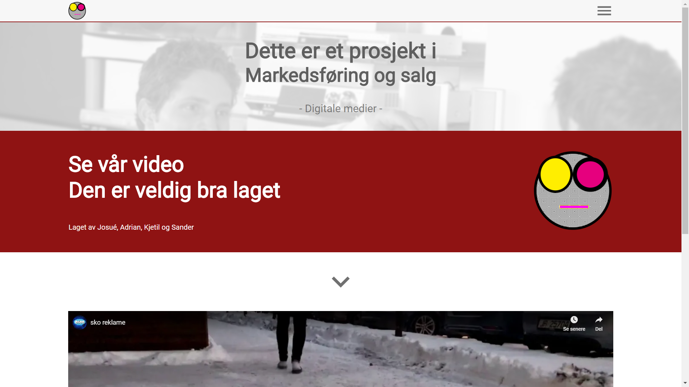

Galleri
keyboard_backspace
Her kan du se på prosjektene jeg har jobbet med før. Jeg liker å jobbe med alt fra enkle nettsider til webapplikasjoner.
Jeg designer, koder, tester og forbedrer alt du kan se på en nettside
Mosala
En nettservice hvor startup bedrifter lett kan møte folk som er interresserte i å jobbe
En nettservice hvor startup bedrifter lett kan møte folk som er interresserte i å jobbe
I denne jobben hadde arbeidsgiveren allerede en idé om hvordan han ville nettsiden skulle se ut, så hoved-layoutet på et par av sidene
var allerede gjort. Ellers designet jeg alt, både UI og UX messig, og kodet nettsidene i PHP og Sass.

Skole side
Denne nettsiden har jeg til skolearbeid, her legger jeg ut arbeidsoppgaver og prosjekter.Her er alt fra arbeidsoppgaver til skoleprosjekter i IT1 faget. Dette er den første nettsiden jeg har laget, og jeg holder ofte på med å legge til/ endre ting på siden. Her kan du også lese mer om hva jeg jobber meg, og hvilke verktøy jeg bruker. Siden har jeg skrevet i vanlig CSS og PHP.
Hidden link
New York
Utforsk New York, her kan du se en ungdomsklubb sin tur til byen. Dette var også et skoleprosjekt.
Utforsk New York, her kan du se en ungdomsklubb sin tur til byen.
Dette er et skole-samarbeidsprosjekt som jeg lagde ganske tidlig. Siden sitt formål er å fortelle om denne ungdomsklubbens planlagte tur til New York. Dette prosjektet lærte meg veldig mye om CSS og HTML generelt, og jeg brukte bare de to
språkene mens jeg jobbet på denne siden, pluss bittelitt PHP.
HypeIT
Et skoleprosjekt hvor vi lager nettbutikk, jeg var leder for front-end avdelingen i prosjektet.Her samarbeider hele klassa om å lage en fake nettbutikk. Jeg er lederen for front-end avdelingen, og dette prosjektet krevde ganske mye. Jeg samarbeidet med flere andre som drev med front-end jobben, og vi måtte organisere og jobbe mye med Sass, PHP, HTML og JS.
Hidden link T-bane
Et skoleprosjekt hvor vi skulle lage en nettside som var koblet til en database.Her var oppgaven å lage en database med datamodell, så koble databasen til en nettside, og bruke databasen til å hente informasjonen vi trengte til nettsiden. Dette prosjektet krevde mye mer avansert PHP og litt SQL, samt selvfølgelig Sass, litt JS, og HTML.
Hidden link nLose
En veldig liten og rask nettside om et produkt vi måtte finne på selv i skolen.En veldig liten og rask nettside om et produkt vi måtte finne på selv i skolen. Nettsiden er ekstremt lett-laget, og ikke veldig pen. Men det er blandt de første jeg lagde, og med denne nettsiden lærte jeg mye på kort tid om web-design og brukeropplevelser. På denne siden brukte jeg bare HTML og CSS.
Hidden link Digitale Medier
Enda en mindre og raskere nettside jeg lagde for å vise frem en reklamevideo i skolen.Enda en mindre og raskere nettside jeg lagde for å vise frem en reklamevideo i skolen. Siden ble laget på under 60 minutter, og ble som sagt bare laget for å ha en side å presentere en reklamevideo for en liksom-bedrift som et gruppeprosjekt. På denne siden brukte jeg bare HTML og CSS.
Hidden link